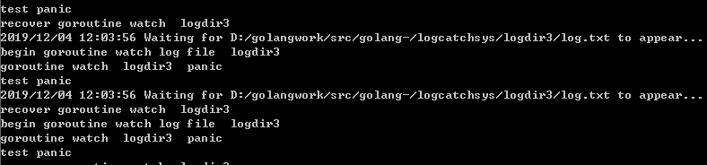

前情回顾
前文我们完成了如下功能
1 根据配置文件启动多个协程监控日志，并启动协程监听配置文件。
2 根据配置文件热更新，动态协调日志监控。
3 编写测试代码，向文件中不断写入日志并备份日志，验证系统健壮性。
本节目标
我们旨在编写一个健壮性较强的日志监控系统，不得不考虑这样一个问题，当某个日志监控协程崩溃或者异常退出，该如何处理？
我的想法是当监控日志文件的协程异常退出时，在主协程复活这个异常退出的协程，使其继续工作，这样极大的增强了系统的稳定性。
借尸还魂，增加异常处理
我们在tailf.go的WatchLogFile中增加异常处理，在协程崩溃时打印日志信息，并且向keychan中写入字符串通知主协程处理。
1 | func WatchLogFile(pathkey string, datapath string, ctx context.Context, keychan chan<- string) { |
WatchLogFile函数进行了扩充，增加了pathkey字符串表示监控哪个日志文件，pathkey实际是config.yaml中的路径的key值。
keychan 实际是一个缓冲chan，用来和主协程通信，告诉自己挂掉了。
WatchLogFile 中其余逻辑和前文一样，不做赘述。
主协程中增加复活逻辑
同样，在主协程中我们需要创建keychan这个缓冲chan，并且捕获子协程发过来的崩溃消息。
1 | func main(){ |
在主协程中愿有逻辑基础上，我们增加了keyChan的初始化，以及keychan数据的监听。
当主协程收到keychan的数据时，我们可以根据keystr修改其对应的context，并且启动新的协程继续监听该日志文件。
这样就达到了复活那些异常死掉的协程的目的。
keychan该如何回收
keychan被多个子协程引用，该如何回收？这种情况下多个子协程写数据，一个主协程接受数据，我们常用的策略如下：
1 不要在接受协程中关闭chan，因为如果此时有其他发送协程向关闭的chan写数据会导致崩溃。
2 有多个发送协程，等待最后一个发送协程退出时关闭chan可防止崩溃。
3 不作处理，等待系统回收，前提是保证所有协程正常退出，否则会导致资源泄漏。
我再三考虑了一下，统计最后协程退出会增加逻辑的复杂性，所以交给系统回收吧，但是我做好了协程的死锁检测和退出通知，应该不会有问题。
制造协程崩溃现场，模拟测试系统稳定性
为了测试我们的系统稳定性，我在修改WatchLogFile函数，新增如下处理，中断key值为logdir3的监控协程，进而观察主协程能否再次启动协程监听该日志文件。
1 | func WatchLogFile(pathkey string, datapath string, ctx context.Context, keychan chan<- string) { |
然后我们启动日志系统，看到如下效果

从日志上可以看到每当我们的协程挂掉，主协程会启动新的协程继续监听日志，保证了系统的稳定性。
谢谢关注我的公众号
源码下载地址
https://github.com/secondtonone1/golang-/tree/master/logcatchsys